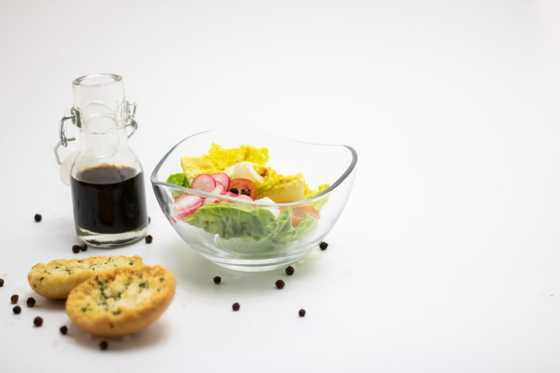
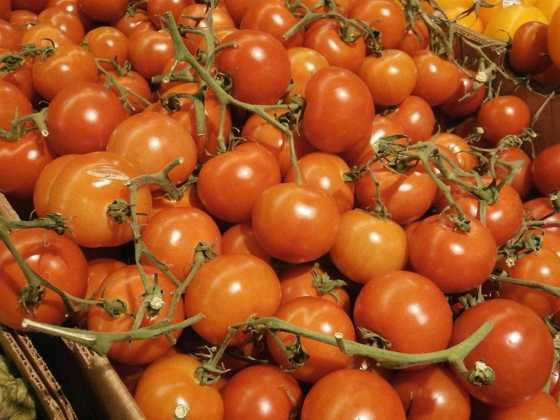
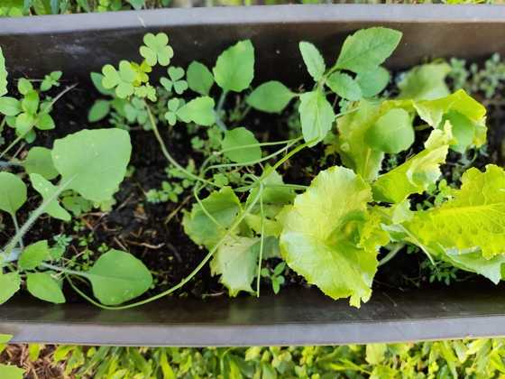
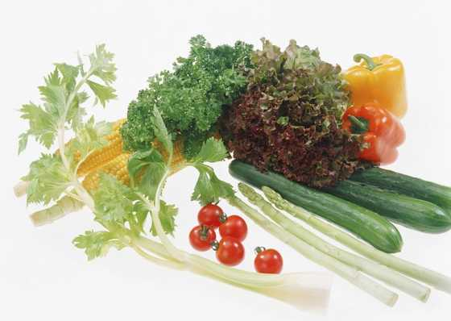
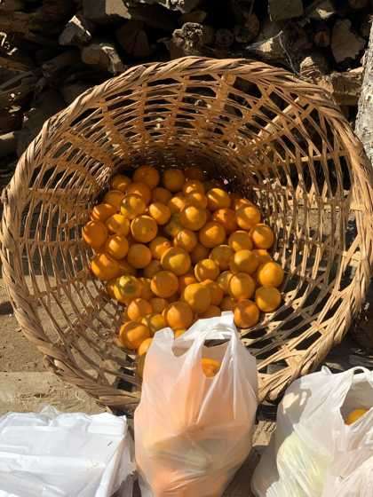
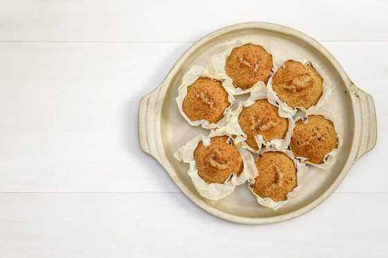
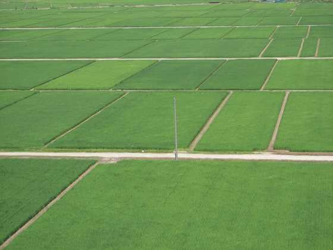
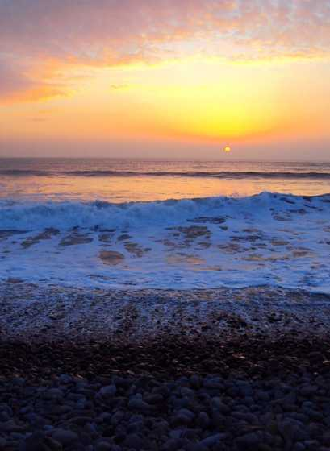

新潟県阿賀野市・水原のkitchen Cafe
ひと皿ごとに、
野菜のおいしさをたっぷりと。
店名のとおり「サラダ」の器から、野菜を楽しむ時間をひらくカフェです。
お店のこと
2024年9月、水原にオープンしたカフェ。
さらだぼうるは、阿賀野市学校町にある「kitchen Cafe」です。食べログの掲載情報によると、オープンは2024年9月1日。口コミでは「野菜たっぷり」「広い」といった特徴が挙がっています。店名の「さらだぼうる(さらだぼぅる)」は、サラダを盛る大きな器を思わせます(制作側のイメージです)。
水原のまちで、野菜を中心にしたごはんとカフェタイムを。そんなお店の姿を、このページでは制作側のイメージもまじえてご紹介します。




情報源: 食べログ/Instagram(営業時間の表示は情報源により異なるため掲載していません)
店名の由来や込められた想いは確認できていません。上記の事実以外の言い回しは制作側のイメージです。
メニュー
ランチもカフェも、ディナーも。
Instagramでは、ランチ・カフェ・ディナーの時間帯が案内されています。メニューの詳細・価格は準備中です。
写真は雰囲気を伝えるフリー素材です。お店で提供しているものそのものではありません。




口コミ
お客様の声(イメージ例)
以下は制作側が作成したイメージ例で、実際のお客様の声ではありません。
野菜がたっぷりで、食べ終わるころには体が軽くなった気がしました。
席がゆったりしていて、午後のお茶の時間にのんびりできました。
夕方まで開いているので、仕事帰りにも寄りやすそうです。
アクセス
ご案内
| 所在地 | 〒959-2032 新潟県阿賀野市学校町７−２ |
|---|---|
| 電話 | 準備中 |
| 営業時間 | 準備中 |
| 定休日 | 準備中 |
| SNS | Instagram @sarada_0901 |
営業時間・定休日は情報源により表記が異なるため掲載していません。最新情報はInstagramをご確認ください。

